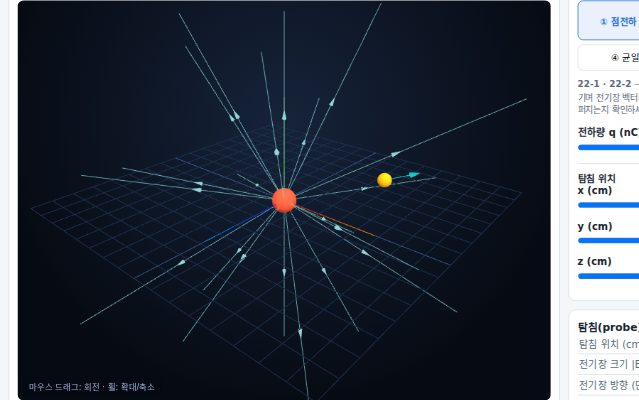
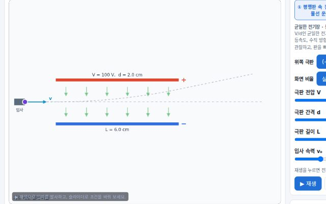
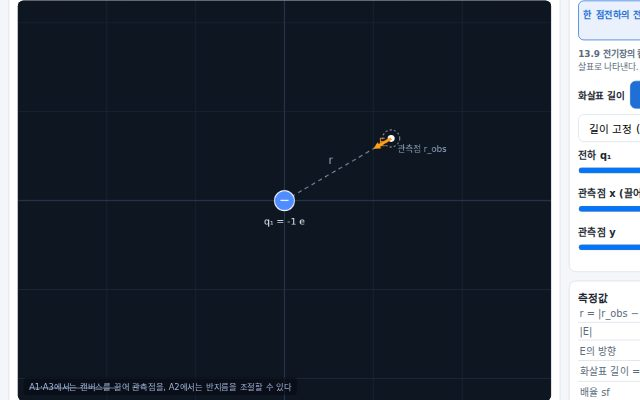
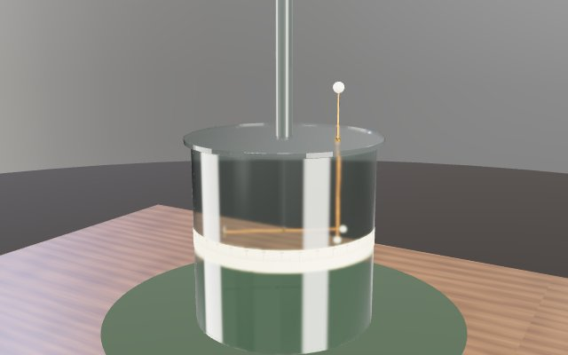

← 홈으로
🧲 전자기
전기장 · 축전기 · 회로 · 자기장 · 전자기 유도
시뮬레이션

⚡
3D 전기장 시뮬레이션
점전하·쌍극자가 만드는 전기장을 3차원으로 탐구합니다 (Halliday Ch.22)
조절
전하 놓기·전하량·보는 높이
관찰
전기장선이 휘고 퍼지는 3D 모양

⚡
평행판 사이 전자의 포물선 운동
균일한 전기장 속 전자 · 등가속도 운동과 포물선 궤적 분석
조절
전기장 세기·전자 입사 조건
관찰
전자가 그리는 포물선 궤적

⚡
전기장 개념
점전하의 장 계산 · 장 합성 · 장 속 입자 운동 예측 · 장의 지연과 상대론적 패턴 (13.8~13.9)
조절
전하 배치·장 속 입자
관찰
합성된 전기장과 입자의 운동 예측

⚖️
쿨롱의 비틀림 저울 가상 실험실
1785년 쿨롱의 실험을 3D 장치로 재현해 쿨롱의 법칙(F∝q₁q₂/r²)을 직접 유도합니다 (Halliday Ch.21)
조절
마이크로미터 비틀림·전하 크기
관찰
평형각 기록 → 로그 그래프 기울기 −2, 쿨롱의 안내
제출
실험 값으로
온라인 보고서
작성(PDF 저장)
🔌
저항의 직렬·병렬연결 가상 실험실
교과서 77~81쪽 실험(전지·스위치·전류계·전압계)을 가상으로 하고, 물 파이프·높이 지형 3D 모형으로 합성 저항 공식을 이끌어냅니다 · 혼합연결 풀이와 배선 블랙박스 게임 포함
조절
저항값·기전력·내부저항, 계기 연결 방법
관찰
실물 배선과 회로도, 측정표 자동 검사, 모형 vs 실제 비교
도전
직·병·혼합 단계별 풀이, 블랙박스 배선 추리 게임 3판(⭐)
📝
직렬·병렬 풀이 활동지 (인쇄용)
위 가상 실험실의 풀이 탭·블랙박스 게임을 학생이 직접 풀어 보는 A4 활동지입니다. 빈칸과 힌트가 단계별로 있어요
구성
직렬·병렬·혼합 문제 6개, 배선 추리 게임 3판
사용
브라우저에서 열어 인쇄(A4)